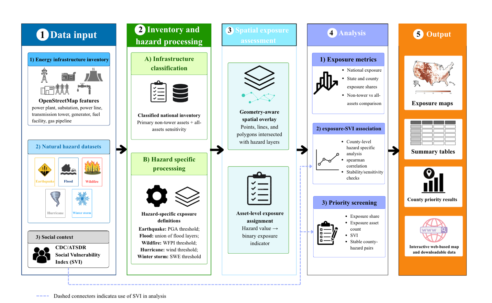
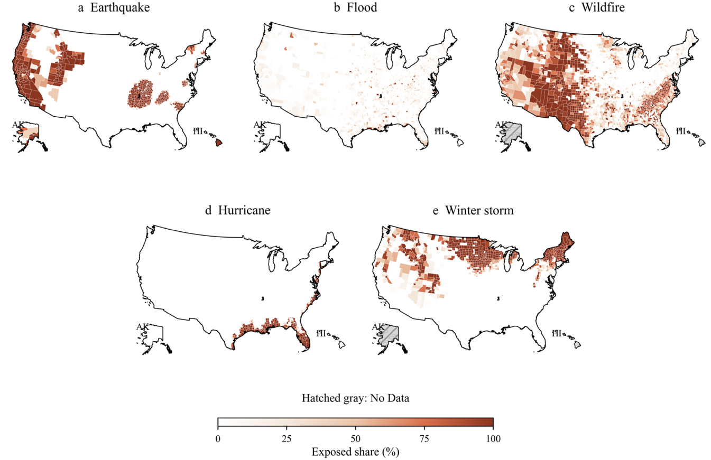
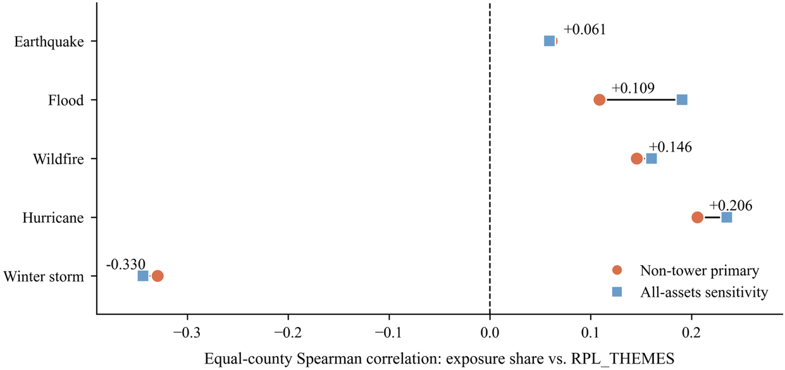

National Scale Screening of U.S. Energy Infrastructure Exposure to Five Natural Hazards and County Social Vulnerability
The study maps 205,783 non-tower energy infrastructure features across the United States, examines exposure to five natural hazard indicators, and compares county exposure with social vulnerability.
Research workflow

County exposure to five hazards

Exposure and social vulnerability
